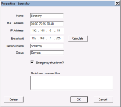
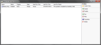
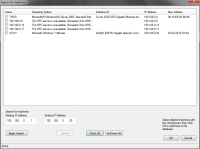
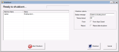
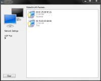

WakeOnLAN
Aquila Technology
Version 2.7
Welcome to AquilaWOL
This is the official website for AquilaWOL, Wake On LAN / Shutdown software for Windows. A powerful WOL, ping, shutdown, GUI application.
WakeOnLAN features include:
- Wake Up remote machines
- Shutdown Windows machines
- Schedule wake ups, shutdowns
- Command line or GUI
- Shutdown Linux machines using script
- Minimize to task tray
- Ability to auto-start with Windows
- Debugging tool displays incoming WOL packets
- Supports complex network environments with subnet directed broadcasts
- Includes tools to scan network for hosts, ip and MAC addresses
- Avoids power spikes by staggering wake-up events
- Schedule wakeups and shutdowns
- Send email notifications using the built-in scheduling system
- Can be used in static or DHCP addressing networks
- System-tray notifications and balloon tips
- Sound notifications when hosts change state
 |
View the Wake On LAN documentation online |
|
Wake On LAN project on Sourceforge |
Download WakeOnLan2.7.0.zip WakeOnLan2.7.0.zip from SourceForge - 6.7 MB |

WakeOnLan performs the following tasks
- WakeUp a remote computer that is powered off
- Shutdown a remote computer
- Ping the selected remote computer, to display it's status
- Perform an emergency shutdown of ALL defined computers at once
- Connect to the remote server via Remote Desktop
- Listen for WOL packets (to aid in troubleshooting)
Screenshots
|
 Host properies |
 Task Scheduler |
 Search for hosts |
 Shutdown |
 Packet Listener |
{kind=link}
{kind=link}
{kind=link}
{kind=link}
{kind=link}
version 2.7, March 13 2013